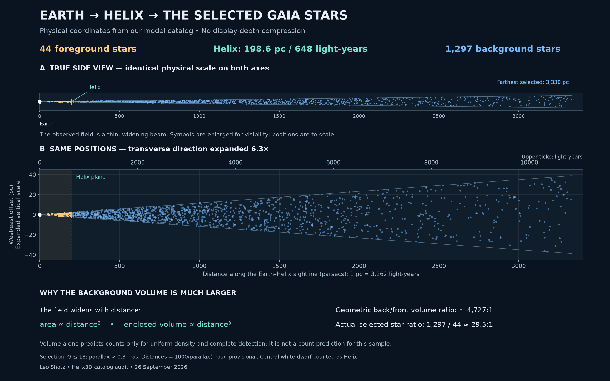

The Helix Nebula · a project by Leo Shatz
From a photograph to a view with depth
This variation of the Helix Nebula is an approximate fusion of scientific references and artistic interpretation: my photograph and Gaia star positions, brought into depth using the Chandra reference model and artistic choices where three-dimensional information is missing.
The Chandra model: the starting geometry
The Helix model shared by Chandra was central to this project. Its printable geometry, adapted by the Chandra team from the work of INAF / Sal Orlando, provided the underlying three-dimensional structure onto which I mapped my photograph.
Chandra describes the reference model itself as an impression derived from Hubble observations through several optical filters. It offers a useful interpretation of the nebula’s form, rather than a complete measurement of every structure’s depth.
For the variation presented here, I adapted that starting geometry to the photographed field, extended it to include faint outer hydrogen emission, and added illustrative internal radial globules. Their placement, depth, thickness and transparency fill gaps that the available data cannot resolve.
The result is deliberately approximate. Scientific references guide the overall structure; artistic interpretation connects the missing information into a coherent visual experience. The animation presents one possible spatial reading of the photograph, not a definitive reconstruction of the Helix Nebula.
What you are seeing
Grounded in the photograph and catalog
The nebula’s texture comes from my color photograph, with aligned H-alpha imagery helping identify faint outer hydrogen emission. The model’s 1,341 mapped Gaia DR3 stars are positioned to match the same photographed field; they are not a randomly generated background.
Approximate stellar distances come from catalog parallaxes. Star colors use Gaia BP−RP photometry, with enhanced saturation, rather than spectral classifications.
Depth interpreted for this visualization
The Chandra reference supplies the starting form. Our extended outer envelope and 51 internal radial globules add illustrative depths and thicknesses where the photograph cannot establish them.
Stellar distances are strongly compressed in the animation. Star sizes are adjusted for visibility. Neither the scene’s depth proportions nor its star sizes are shown to physical scale.
The controller explores a fixed horizontal orbit from −40° to +40° using rendered video frames. Movement represents a changing viewpoint around a static model, not the expansion of the nebula or the motion of stars. This is an interpretation informed by data, not a measured 3D reconstruction.
Why the animation uses compressed stellar distances
Both the interactive animation and its underlying movie were rendered with a compressed star field. The stars span thousands of light-years, while the nebula occupies a much smaller region. Compressing the stellar depth lets the nebula and surrounding stars remain readable together during a gentle orbit. The stars’ alignment with the photograph and their foreground/background assignment are retained, but the displayed spacing is not a physical distance scale.
A true-scale plot of the existing stars is possible—the diagram below shows it. A more complete fly-around reconstruction would also need many more stars beyond the narrow field covered by the original photograph, broader catalog coverage and checks on their distances. That larger reconstruction was outside this project’s scope. This presentation explores the photographed field rather than attempting to populate all the surrounding space.
Why are most of the mapped stars behind Helix?
Helix lies near the Earth end of the selected star field. The photograph samples a narrow, widening cone of space: farther sections are both wider and, in this sample, extend much farther than the foreground.

A longer and wider region of space
The adopted Helix distance is 198.6 parsecs, about 648 light-years. The farthest selected star is about 10,861 light-years away. Beyond Helix, the sampled region extends another 15.8 Earth–Helix distances.
Within a fixed angular field, cross-sectional area grows as distance squared and enclosed volume as distance cubed. Even two regions of equal radial length contain different amounts of space:
| Region | Relative volume | Stars |
|---|---|---|
| Earth → Helix | 1× | 44 |
| Helix → twice its distance | 7× | 137 |
Selection also shapes the distribution
The model selects stars with Gaia G magnitude ≤ 18 and parallax > 0.3 milliarcseconds. With the same parallax cutoff, applying the brightness limit reduces the supplied sample from 66 foreground / 3,523 background stars to 44 / 1,297. It reduces the imbalance rather than creating it.
Many intrinsically faint distant stars fall below the brightness limit. Galactic structure, stellar luminosities, extinction and survey selection also affect the counts. The much larger background volume explains why a strong imbalance is reasonable, but volume alone cannot predict the observed ratio.
Credits and further reading
- Photography, creative direction and visualization: Leo Shatz — original work on AstroBin.
- Reference geometry: INAF / Sal Orlando; printable adaptation by the Chandra team — The Helix Nebula in 3D.
- Stellar data: ESA / Gaia / DPAC — Gaia Data Release 3.
- Understanding parallax distances: Bailer-Jones et al., Gaia distance estimation. The probabilistic distances described there were not used in this model.
- AI-assisted modeling, visualization and software development: OpenAI Codex (GPT-6 Astra), directed and reviewed by Leo Shatz.
Original photograph & imaging details
The Helix Nebula and its faint outer structures
By Leo Shatz · Published
38 h 5 min integration · Takahashi FSQ-130ED · Player One Zeus-M Pro · Astro-Physics Mach1 GTO
Exposure breakdown, equipment and processing
| Filter | Exposures | Integration |
|---|---|---|
| Red | 16 × 300 s | 1 h 20 min |
| Green | 16 × 300 s | 1 h 20 min |
| Blue | 15 × 300 s | 1 h 15 min |
| Hα | 145 × 600 s | 24 h 10 min |
| O III | 60 × 600 s | 10 h |
| Total | 38 h 5 min | |
Equipment and processing
- Telescope
- Takahashi FSQ-130ED
- Camera
- Player One Zeus-M Pro
- Mount
- Astro-Physics Mach1 GTO
- Filters
- Chroma Red, Green and Blue 50 mm; Chroma H-alpha 3 nm Bandpass 50 mm; Chroma O III 3 nm Bandpass 50 mm
- Accessories
- FLI Atlas focuser; Player One FHD-OAG MAX; Player One Phoenix Wheel 7×2″
- Software
- Adobe Photoshop; Astro-Physics APCC Pro; Open PHD Guiding Project PHD2; Pleiades Astrophoto PixInsight; Russell Croman Astrophotography BlurXTerminator, NoiseXTerminator and StarXTerminator; Software Bisque TheSky; Stefan Berg Nighttime Imaging ’N’ Astronomy (N.I.N.A.)
View the photograph and further acquisition details on AstroBin ↗